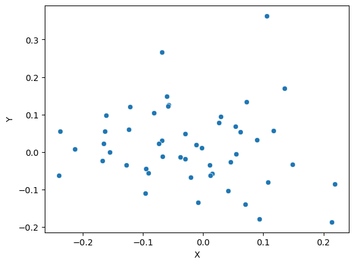

7 Tutorial 7
7.1 Dependence between variables
- Correlation and regression
- Linear regression – OLS
7.1.1 1. Correlation and Regression
- Pearson’s coefficient measures linear correlation (r).
- Spearman coefficient compares the ‘ranks’ of data.
- NumPy, SciPy, and Pandas all have functions that can be used to calculate these coefficients.
7.1.2 Correlation in Numpy (Pearson’s r)
Required packages
Let’s make up some numbers
What does our data look like?
[Text(0.5, 0, 'X'), Text(0, 0.5, 'Y')]
Use Numpy to get pearson’s correlation between x and y
7.1.3 The result is a correlation matrix. Each cell in the table shows the correlation between two variables.
The values on the main diagonal of the correlation matrix (upper left and lower right) are equal to 1. These corresponds to the correlation coefficient for
xandxandyandy, so they will always be equal to 1.The values on the bottom left and top right show the pearson’s correlation coefficient for
xandy.
We can do the same thing with more than two variables
7.2 Correlation in SciPy (Pearson and Spearman)
Import required packages
PearsonRResult(statistic=-0.12455510674830719, pvalue=0.3887841983709771)SignificanceResult(statistic=-0.13661464585834332, pvalue=0.34413653070929573)7.2.0.1 Note: these functions return both the correlation coefficient and the p-value
7.3 Correlation in Pandas
Time for some real data :)
7.3.1 Today’s dataset: Birthweight
This dataset contains information on new born babies and their parents.
https://www.sheffield.ac.uk/mash/statistics/datasets
Required packages
| Length | Birthweight | Headcirc | Gestation | smoker | mage | mnocig | mheight | mppwt | fage | fedyrs | fnocig | fheight | lowbwt | mage35 | |
|---|---|---|---|---|---|---|---|---|---|---|---|---|---|---|---|
| 0 | 56 | 4.55 | 34 | 44 | 0 | 20 | 0 | 162 | 57 | 23 | 10 | 35 | 179 | 0 | 0 |
| 1 | 53 | 4.32 | 36 | 40 | 0 | 19 | 0 | 171 | 62 | 19 | 12 | 0 | 183 | 0 | 0 |
| 2 | 58 | 4.10 | 39 | 41 | 0 | 35 | 0 | 172 | 58 | 31 | 16 | 25 | 185 | 0 | 1 |
| 3 | 53 | 4.07 | 38 | 44 | 0 | 20 | 0 | 174 | 68 | 26 | 14 | 25 | 189 | 0 | 0 |
| 4 | 54 | 3.94 | 37 | 42 | 0 | 24 | 0 | 175 | 66 | 30 | 12 | 0 | 184 | 0 | 0 |
7.3.2 Is there any correlation between birthweight and head circumfrence?
<Axes: xlabel='Birthweight', ylabel='Headcirc'>7.3.3 There are lots of ways to calculate correlation in Pandas…
7.3.4 We can also find the correlation between all the variables in our dataframe at once
| Length | Birthweight | Headcirc | Gestation | smoker | mage | mnocig | mheight | mppwt | fage | fedyrs | fnocig | fheight | lowbwt | mage35 | |
|---|---|---|---|---|---|---|---|---|---|---|---|---|---|---|---|
| Length | 1.000000 | 0.726833 | 0.563172 | 0.705111 | -1.534062e-01 | 0.075268 | -0.039843 | 0.484992 | 3.981974e-01 | 0.137184 | 0.079485 | 0.008800 | 0.208358 | -0.609928 | 0.130502 |
| Birthweight | 0.726833 | 1.000000 | 0.684616 | 0.708303 | -3.142339e-01 | 0.000173 | -0.152335 | 0.363055 | 4.008856e-01 | 0.175710 | 0.071045 | -0.093136 | 0.031022 | -0.651964 | -0.108947 |
| Headcirc | 0.563172 | 0.684616 | 1.000000 | 0.404635 | -1.828719e-01 | 0.145842 | -0.132988 | 0.337047 | 3.028541e-01 | 0.301151 | 0.123892 | -0.046837 | 0.041509 | -0.446849 | 0.055386 |
| Gestation | 0.705111 | 0.708303 | 0.404635 | 1.000000 | -9.474608e-02 | 0.010778 | 0.043195 | 0.210503 | 2.550824e-01 | 0.142175 | 0.130987 | -0.113831 | 0.207597 | -0.602935 | 0.007395 |
| smoker | -0.153406 | -0.314234 | -0.182872 | -0.094746 | 1.000000e+00 | 0.212479 | 0.727218 | 0.000353 | 9.808342e-16 | 0.197501 | -0.014891 | 0.417633 | 0.110633 | 0.253012 | 0.146938 |
| mage | 0.075268 | 0.000173 | 0.145842 | 0.010778 | 2.124788e-01 | 1.000000 | 0.340294 | 0.059956 | 2.741677e-01 | 0.806584 | 0.441683 | 0.090927 | -0.199547 | -0.076394 | 0.692664 |
| mnocig | -0.039843 | -0.152335 | -0.132988 | 0.043195 | 7.272181e-01 | 0.340294 | 1.000000 | 0.126439 | 1.489446e-01 | 0.248425 | 0.198526 | 0.257307 | 0.020672 | 0.035384 | 0.290574 |
| mheight | 0.484992 | 0.363055 | 0.337047 | 0.210503 | 3.532676e-04 | 0.059956 | 0.126439 | 1.000000 | 6.806217e-01 | -0.079870 | 0.035297 | 0.048398 | 0.274338 | -0.198151 | 0.116002 |
| mppwt | 0.398197 | 0.400886 | 0.302854 | 0.255082 | 9.808342e-16 | 0.274168 | 0.148945 | 0.680622 | 1.000000e+00 | 0.255706 | 0.180374 | 0.057163 | 0.092983 | -0.353974 | 0.136853 |
| fage | 0.137184 | 0.175710 | 0.301151 | 0.142175 | 1.975014e-01 | 0.806584 | 0.248425 | -0.079870 | 2.557058e-01 | 1.000000 | 0.300471 | 0.135862 | -0.269377 | -0.245095 | 0.351405 |
| fedyrs | 0.079485 | 0.071045 | 0.123892 | 0.130987 | -1.489058e-02 | 0.441683 | 0.198526 | 0.035297 | 1.803741e-01 | 0.300471 | 1.000000 | -0.263103 | 0.017798 | -0.191273 | 0.278682 |
| fnocig | 0.008800 | -0.093136 | -0.046837 | -0.113831 | 4.176330e-01 | 0.090927 | 0.257307 | 0.048398 | 5.716254e-02 | 0.135862 | -0.263103 | 1.000000 | 0.329364 | 0.266013 | -0.088989 |
| fheight | 0.208358 | 0.031022 | 0.041509 | 0.207597 | 1.106327e-01 | -0.199547 | 0.020672 | 0.274338 | 9.298347e-02 | -0.269377 | 0.017798 | 0.329364 | 1.000000 | 0.098688 | -0.188230 |
| lowbwt | -0.609928 | -0.651964 | -0.446849 | -0.602935 | 2.530122e-01 | -0.076394 | 0.035384 | -0.198151 | -3.539738e-01 | -0.245095 | -0.191273 | 0.266013 | 0.098688 | 1.000000 | 0.099340 |
| mage35 | 0.130502 | -0.108947 | 0.055386 | 0.007395 | 1.469385e-01 | 0.692664 | 0.290574 | 0.116002 | 1.368534e-01 | 0.351405 | 0.278682 | -0.088989 | -0.188230 | 0.099340 | 1.000000 |
7.3.5 That isn’t so helpful… we can also make a heatmap to display the data visually
7.4 Linear Regression
In statistics, linear regression is a linear approach to modeling the relationship between a scalar response and one or more explanatory variables (also known as dependent and independent variables).
https://en.wikipedia.org/wiki/Linear_regression
We have a lot of options for for studying linear regression
7.4.1 Scipy.stats
LinregressResult(slope=2.720563928236349, intercept=25.58239845298082, rvalue=0.6846156184774087, pvalue=5.734797978444235e-07, stderr=0.45798646115832675, intercept_stderr=1.5416553949208147)A reminder of what the data look like…
7.4.2 Using sklearn
my_model = linear_model.LinearRegression()
results = my_model.fit(df[['Birthweight']], df[['Headcirc']])
print("The linear model is: Y = {:.5} + {:.5}X".format(results.intercept_[0],
results.coef_[0][0]))The linear model is: Y = 25.582 + 2.7206X7.5 Hypothesis testing
- Null hypothesis 1: The actual intercept is equal to zero
- Null hypothesis 2: The actual slope is equal to zero
Using the statsmodels.api package
Set up the model
X = sm.add_constant(df['Birthweight'])
Y = df['Headcirc']
model = sm.OLS(Y, X) # OLS = ordinary least squares
results = model.fit()
print(results.summary()) OLS Regression Results
==============================================================================
Dep. Variable: Headcirc R-squared: 0.469
Model: OLS Adj. R-squared: 0.455
Method: Least Squares F-statistic: 35.29
Date: Tue, 16 Jul 2024 Prob (F-statistic): 5.73e-07
Time: 09:12:12 Log-Likelihood: -82.574
No. Observations: 42 AIC: 169.1
Df Residuals: 40 BIC: 172.6
Df Model: 1
Covariance Type: nonrobust
===============================================================================
coef std err t P>|t| [0.025 0.975]
-------------------------------------------------------------------------------
const 25.5824 1.542 16.594 0.000 22.467 28.698
Birthweight 2.7206 0.458 5.940 0.000 1.795 3.646
==============================================================================
Omnibus: 1.089 Durbin-Watson: 2.132
Prob(Omnibus): 0.580 Jarque-Bera (JB): 1.007
Skew: -0.193 Prob(JB): 0.604
Kurtosis: 2.347 Cond. No. 20.6
==============================================================================
Notes:
[1] Standard Errors assume that the covariance matrix of the errors is correctly specified.7.5.0.1 The P-value is the answer to the question “how likely is it that we’d get a test statistic t* as extreme as we did if the null hypothesis were true?
Does this output correspond to a one-tailed or two-tailed test?
If we want to test whether the slope is different from 0, we need a two-sided test.
If we want to test a specific direction, we can use a one-sided test. To do this, we need to divide the p-value in the table above in half.
Read more: https://stats.idre.ucla.edu/other/mult-pkg/faq/general/faq-what-are-the-differences-between-one-tailed-and-two-tailed-tests/